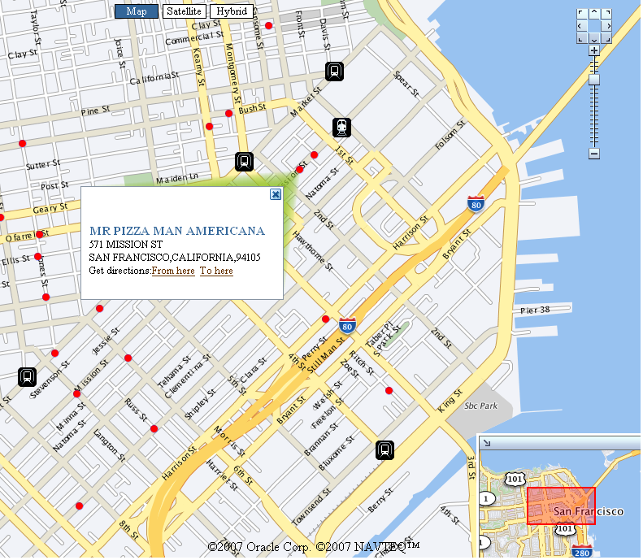

Oracle Maps is a new feature of Oracle Application Server MapViewer. First appeared in version 10.1.3.1, Oracle Maps introduces a powerful AJAX web mapping interface to MapViewer's core visualization capabilities. Oracle Maps provides high performance google-style map display by caching previously rendered map tiles on the server. It also supports interactive Feature of Interest (FOI) layers that are based on database queries against Oracle Spatial. An FOI is a map feature that responds to mouse roll-over with an info-tip window displaying its properties.
Oracle Maps also supports other unique features such as red-lining, marquee zoom, thematic mapping, collapsible map decoration pieces inside the main map (legend, birds-eye-view etc), and easy integration with 3rd party WMS services and other types of map providers. All of these features are exposed through an open JavaScript API. In this tutorial you will learn and quickly get up to speed with this API.
View the Online Oracle Maps API Reference here.
For feedbacks and bug reports, please use the Spatial/MapViewer discussion forum on OTN.
